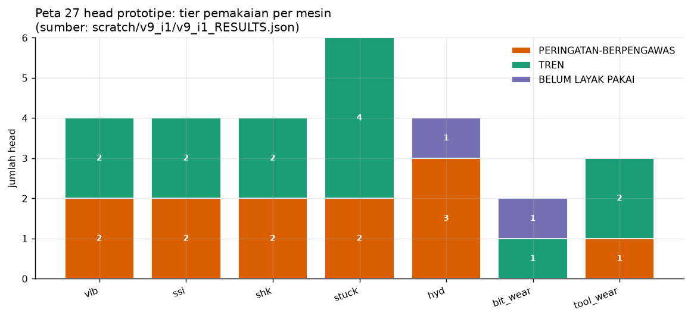
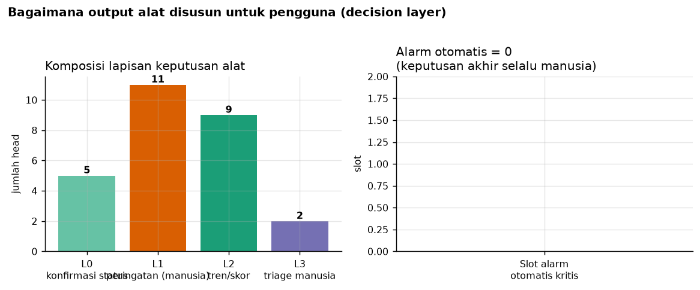
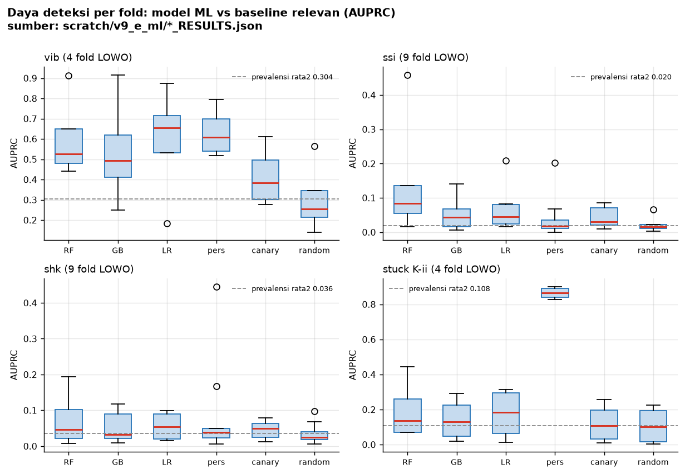
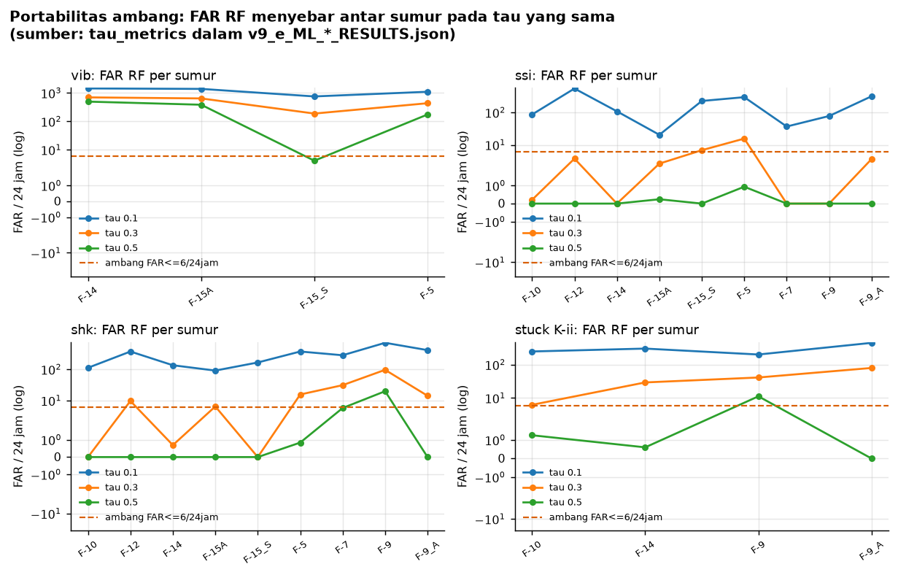
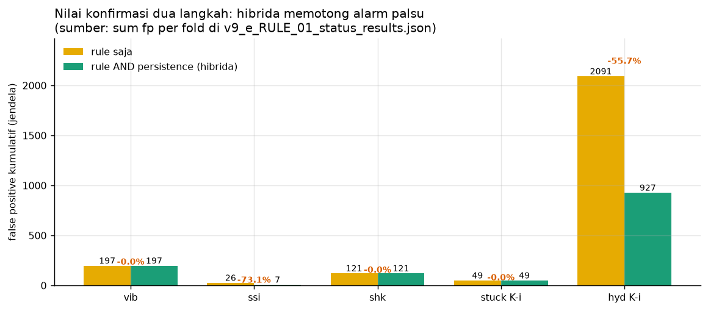
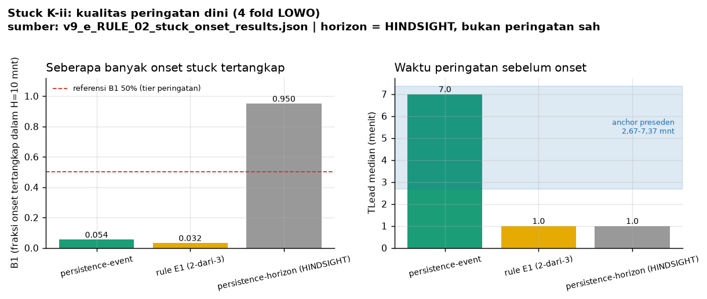

11 klaim tugas (apa yang dideteksi + tingkat pemakaian)
| # | Mesin | Klaim | Jenis tugas | Head | Tier | Lapisan | Badge FAR | Batas |
|---|---|---|---|---|---|---|---|---|
| 1 | bit_wear | K-1 | deteksi kondisi (K-1); K-2 onset = BELUM DIJALANKAN | persistence | TREN | L2 | P/R/FAR = BELUM TERUKUR (field tidak ada di JSON EVAL_A §2.6) | ranking/tren saja; hibrida degradasi ke persistence (label Teale = kanal terlarang); dataset USROP ≠ rig Volve |
| 2 | bit_wear | K-2 | deteksi kondisi (K-1); K-2 onset = BELUM DIJALANKAN | k2_onset_belum | BELUM LAYAK PAKAI | L3 | nol angka (kampanye belum jalan) | K-2 BELUM boleh dipakai di tingkat apa pun sebelum kampanye berangka |
| 3 | hyd | K-i | deteksi kondisi (K-i) + prediksi kejadian mendatang (K-ii) | rule_display, persistence, hybrid_rule_and_persistence | PERINGATAN-BERPENGAWAS | L0, L1 | H1p = rule DAN persistence (head utama): FP 927, presisi 0,8243, recall 0,6519, FAR 4,10/24jam, lead 8,0 mnt, 7/9 fold (S6 §4.1) | lapisan B belum terukur; cakupan >50% hanya F-10 |
| 4 | hyd | K-ii | deteksi kondisi (K-i) + prediksi kejadian mendatang (K-ii) | k2_tidak_tersedia | BELUM LAYAK PAKAI | L3 | q95: P=R=0 (0 TP, FP 177); fisher CI memuat prev (EVAL_C §2.5) | TIDAK DIJALANKAN di prototipe (data pit/GAINLOSSTOT belum diparse) — bukan kegagalan metode; RF V8 = referensi |
| 5 | shk | deteksi anomali/dysfunction bit bounce (SHKRSK_RT >= 1) | deteksi anomali sedang berlangsung | rule_display, persistence, hybrid_rule_and_persistence, rf_lowo | PERINGATAN-BERPENGAWAS TREN | L0, L1, L2 | FAR 0,67-6,6/24jam; <=6 di 7/9 well (EVAL_C §2.3) | badge FAR wajib tampil; B3 EVAL_B negatif → periksa dulu, jangan auto |
| 6 | ssi | deteksi kondisi stick-slip torsional (SSI(CRPM_RT) >= 1) | deteksi kondisi | rule_display, persistence, hybrid_rule_and_persistence, rf_lowo | PERINGATAN-BERPENGAWAS TREN | L0, L1, L2 | FP rule total 26 lintas fold (E_RULE §2.2) | nodata CRPM 62,3% baris — deteksi bergantung ketersediaan sensor |
| 7 | stuck | K-i | deteksi kondisi (K-i) + prediksi kejadian mendatang (K-ii) | rule_display, persistence, hybrid_rule_and_persistence | PERINGATAN-BERPENGAWAS TREN | L0, L1 | rule P 0,92-0,97; FAR 8,3-61,0 (hanya 2 well: F-14, F-9_A) | hanya layak di well yang diuji; replikasi F-9/F-10/F-15 diperlukan |
| 8 | stuck | K-ii | deteksi kondisi (K-i) + prediksi kejadian mendatang (K-ii) | e1_2of3, persistence_event, rf_lowo | TREN | L2 | E1 FAR 2,1-29,0 (13,9x); B1 0-0,066; FP 422 (EVAL_C §2.4) | TRIAGE/riset ranking — belum layak peringatan (B1 di bawah 0,5) |
| 9 | tool_wear | K-i | deteksi perubahan-regime (K-i); K-ii = ranking | calib_5of27, op_far_calibrated | PERINGATAN-BERPENGAWAS TREN | L1, L2 | engine 5/27 (E_STAT §B): FP_R01 27-41 jendela (71-98% jendela evaluasi) — terlalu sensitif utk peringatan; deteksi R02 4/4 alat, TLead 20-36 dtk | dipakai sbg GATING inspeksi + skor perubahan-regime sahaja; JANGAN jadi peringatan (FP besar); titik operasi layak = op_far_calibrated |
| 10 | tool_wear | K-ii | deteksi perubahan-regime (K-i); K-ii = ranking | canary_3rms | TREN | L2 | canary 3-RMS AUPRC 0,516-0,612 (1,19x); identity-majority = prev (plafon lift 2,0) | ranking lintas-alat saja; precision biner V8 0,50-0,56 ≈ peluang → jangan sbg alarm |
| 11 | vib | deteksi kondisi getaran lateral (status VIBLAT_RT >= 32,17405 ft/s2) | deteksi kondisi (bukan prediksi onset — TLead tidak berlaku) | rule_display, persistence, hybrid_rule_and_persistence, rf_lowo | PERINGATAN-BERPENGAWAS TREN | L0, L1, L2 | FAR 10,0-49,9/24jam di 4 well (E_RULE §2.1); P 0,87-0,95 | jangan klaim lead-time menit; ambang wajib kalibrasi per-well (D-A4) sebelum dipakai sbg alarm |
Hasil run prototipe (segmen F-14 + 4 alat bengkel)
| Mesin | Head | Lapisan | Aktivitas | Butuh manusia | Badge FAR |
|---|---|---|---|---|---|
| vib | rule_display | L1 | 540 menit aktif | WAJIB | FAR 10,0-49,9/24jam di 4 well (E_RULE §2.1); P 0,87-0,95 |
| vib | persistence | L0 | 1142 menit aktif | — | persistence = baseline konfirmasi-status (AUPRC V8 0,517-0,796) |
| vib | hybrid_rule_and_persistence | L1 | 540 menit aktif | WAJIB | hibrida ≡ rule utk kelas ini (E_RULE §2.1: FP = rule) |
| vib | rf_lowo | L2 | 1271 menit aktif | — | FAR τ0,5 menyebar 4,1-496 (119x) — TIDAK PORTABEL (EVAL_C C3) |
| ssi | rule_display | L1 | 0 menit aktif | WAJIB | FP rule total 26 lintas fold (E_RULE §2.2) |
| ssi | persistence | L0 | 31 menit aktif | — | persistence kalah 0/5 vs RF (angka V8) |
| ssi | hybrid_rule_and_persistence | L1 | 0 menit aktif | WAJIB | FP 26 -> 7 (-73,1%) konsisten 7/7 well; FAR hybrid 0-3,7 (EVAL_C §2.2) |
| ssi | rf_lowo | L2 | 0 menit aktif | — | τ0,3 FAR 0-15,6; well FAR<=6 hanya 2/7 (EVAL_C C3) |
| shk | rule_display | L1 | 103 menit aktif | WAJIB | FAR 0,67-6,6/24jam; <=6 di 7/9 well (EVAL_C §2.3) |
| shk | persistence | L0 | 623 menit aktif | — | persistence ≥ prevalence-random 7/9 (E_RULE §2.3) |
| shk | hybrid_rule_and_persistence | L1 | 103 menit aktif | WAJIB | hibrida ≡ rule (E_RULE §2.3) |
| shk | rf_lowo | L2 | 0 menit aktif | — | τ0,3 FAR 0-96,5; well <=6 hanya 1/9 (EVAL_C C3) |
| stuck | rule_display | L1 | 210 menit aktif | WAJIB | rule P 0,92-0,97; FAR 8,3-61,0 (hanya 2 well: F-14, F-9_A) |
| stuck | persistence | L0 | 451 menit aktif | — | persistence 0,787 (F-9_A, kutipan V6) |
| stuck | hybrid_rule_and_persistence | L1 | 210 menit aktif | WAJIB | hibrida stuck_k1 = E_RULE §2.4 (2 fold) |
| stuck | e1_2of3 | L2 | 313 menit aktif | — | E1 FAR 2,1-29,0 (13,9x); B1 0-0,066; FP 422 (EVAL_C §2.4) |
| stuck | persistence_event | L2 | 4 menit aktif | — | FAR 0-2,9; FP alarm total 11 (EVAL_C §2.4) |
| stuck | rf_lowo | L2 | 42 menit aktif | — | RF τ0,5 B1 0-0,045; signifikan CI hanya 1/4 (EVAL_C §2.4) |
| hyd | rule_display | L1 | 975 menit aktif | WAJIB | rule t0-1 FP total 2.091 lintas fold (E_RULE §2.5) |
| hyd | persistence | L0 | 876 menit aktif | — | persistence P 0,615-0,793; FAR_t 32,2-109,7/24jam |
| hyd | hybrid_rule_and_persistence | L1 | 626 menit aktif | WAJIB | FAR 14,6-58,4 (9/9 well > 6); FP-cut -55,7% konsisten 9/9 |
| hyd | k2_tidak_tersedia | L3 | BELUM TERSEDIA DI PROTOTIPE | WAJIB | q95: P=R=0 (0 TP, FP 177); fisher CI memuat prev (EVAL_C §2.5) |
| bit_wear | persistence | L2 | 4917 menit aktif | — | P/R/FAR = BELUM TERUKUR (field tidak ada di JSON EVAL_A §2.6) |
| bit_wear | k2_onset_belum | L3 | BELUM DIJALANKAN | WAJIB | nol angka (kampanye belum jalan) |
| tool_wear | calib_5of27 | L2 | 305 menit aktif | — | engine 5/27 (E_STAT §B): FP_R01 27-41 jendela (71-98% jendela evaluasi) — terlalu sensitif utk peringatan; deteksi R02 4/4 alat, TLead 20-36 dtk |
| tool_wear | op_far_calibrated | L1 | 21 menit aktif | WAJIB | FAR-terkalibrasi target <=1 alarm/menit: FP_R01 1-3/alat; deteksi R02 4/4; TLead 20-36 dtk (E_STAT §C, EVAL_C §2.7) |
| tool_wear | canary_3rms | L2 | 282 menit aktif | — | canary 3-RMS AUPRC 0,516-0,612 (1,19x); identity-majority = prev (plafon lift 2,0) |
Nilai maintenance (lapisan B) — dari data aktivitas DDR, bukan asumsi
| Ukuran | Angka | Sumber |
|---|---|---|
| Record aktivitas | 23.447 | data/volve/ddr.parquet kolom activity |
| Total jam tercatat | 39.397,986 jam | hitung ulang d30_start dan dTimEnd tiap record |
| Interruption other | 2.680,917 jam | proprietaryCode "interruption -- other" |
| Interruption waiting on weather | 1.925,5 jam | proprietaryCode "interruption -- waiting on weather" |
| Henti karena equipment failure | 2.739,667 jam | stateDetailActivity pada kode interruption |
| Henti karena stuck equipment | 212,0 jam | stateDetailActivity pada kode interruption |
| Henti karena circulation loss | 195,0 jam | stateDetailActivity pada kode interruption |
Jam henti tidak dapat dipetakan ke satu alarm tertentu: tidak ada kunci bit atau nomor work order yang menghubungkan alarm ke record DDR. Karena itu angka ini dipakai sebagai besaran konteks, bukan klaim penghematan.
Beban tinjauan per shift 8 jam (head peringatan)
| Mesin | Head | FAR per 24 jam | Tinjauan per shift |
|---|---|---|---|
| vib | rule_display | 49,942 | 17 |
| hyd | rule_display | 55,570 | 19 |
| hyd | hybrid_rule_and_persistence (head utama) | 16,611 | 6 |
| stuck | rule_display | 8,321 | 3 |
| shk | rule_display | 6,618 | 3 |
| tool_wear | op_far_calibrated | 2,096 | 1 |
| ssi | rule_display | 0,000 | 0 |
Beban tinjauan = FAR per 24 jam dibagi 3 shift, dibulatkan ke atas. Angka FAR di sini adalah FAR segmen F-14 dari run prototipe, bukan median lintas fold.
Visualisasi hasil
Peta 27 head per mesin

Tiap batang = satu mesin, warna = tier pemakaian. Peringatan (jingga) = siap memberi peringatan berpengawas; tren (hijau) = hanya skor urutan; ungu = kepala yang memang belum tersedia.
Susunan output untuk pengguna

Alat membagi output ke 4 lapisan: status otomatis, peringatan berpengawas, skor tren, dan keputusan manusia. Keputusan akhir selalu di tangan insinyur pengeboran.
Daya deteksi model vs baseline

Kotak = sebaran AUPRC antar fold LOWO. Tiap model dibandingkan ke baseline yang relevan dengannya (persistence, canary-kedalaman, prevalensi acak). Garis putus-putus = prevalensi kelas.
Sebaran alarm palsu antar sumur

FAR RF pada tau yang sama berbeda tajam antar sumur (skala log). Garis jingga = batas FAR≤6/24jam. Inilah alasan ambang tidak boleh diseragamkan lintas sumur.
Nilai konfirmasi dua langkah

Hibrida (rule AND persistence) memotong alarm palsu dibanding rule saja. Persentase = pemotongan FP kumulatif pada 5 kelas status.
Kualitas peringatan dini stuck

Kiri: fraksi onset tertangkap (B1). Kanan: waktu peringatan vs anchor preseden 2,67–7,37 menit. Batang abu = hindsight (bukan peringatan sah).